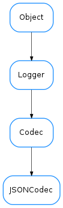

JSONCodec¶

-
class
JSONCodec[source]¶ Bases:
taurus.core.util.codecs.CodecA codec able to encode/decode to/from json format. It uses the
jsonmodule.Example:
>>> from taurus.core.util.codecs import CodecFactory >>> cf = CodecFactory() >>> codec = cf.getCodec('json') >>> >>> # first encode something >>> data = { 'hello' : 'world', 'goodbye' : 1000 } >>> format, encoded_data = codec.encode(("", data)) >>> print encoded_data '{"hello": "world", "goodbye": 1000}' >>> >>> # now decode it >>> format, decoded_data = codec.decode((format, encoded_data)) >>> print decoded_data {'hello': 'world', 'goodbye': 1000}
-
decode(data, *args, **kwargs)[source]¶ decodes the given data from a json string.
Parameters: data ( sequence[str, obj]) – a sequence of two elements where the first item is the encoding format of the second item objectReturn type: sequence[str, obj]Returns: a sequence of two elements where the first item is the encoding format of the second item object
-
encode(data, *args, **kwargs)[source]¶ encodes the given data to a json string. The given data must be a python object that json is able to convert.
Parameters: data ( sequence[str, obj]) – a sequence of two elements where the first item is the encoding format of the second item objectReturn type: sequence[str, obj]Returns: a sequence of two elements where the first item is the encoding format of the second item object
-